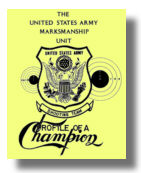

This section of the website is dedicated to the Army
Marksmanship Unit's Profiles of Champions Booklet. Well worth the reading, It contains autobiographical information and tips from the top pistol shooters and coaches of the Army Pistol Team during the 1960's and 70's.
- Frederick J. Kiefer, International Coordinator USAMU
- Oscar K. Weinmeister, CONUS Coordinator USAMU
- SFC Bonnie D. Harmon, USAMU, 1972 National Champion
- SFC Harland V. Rennolds, USAMU, Top Competitor
- CPT Robert L. Merritt, USAMU, OIC Pistol Division
- MSG Aubrey E. Smith, USAMU, NCOIC Pistol Division